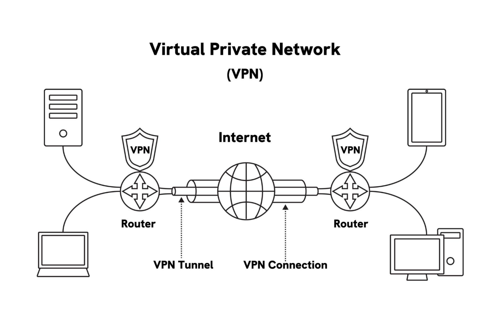
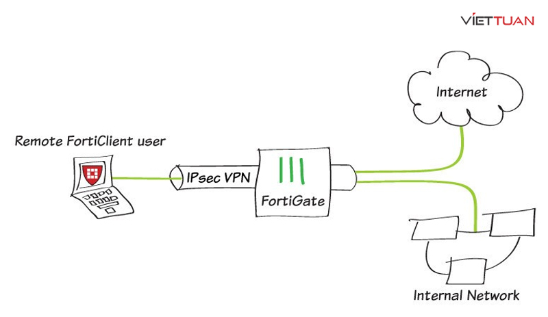
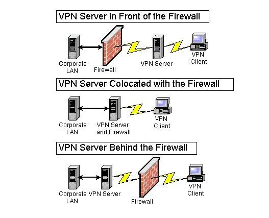
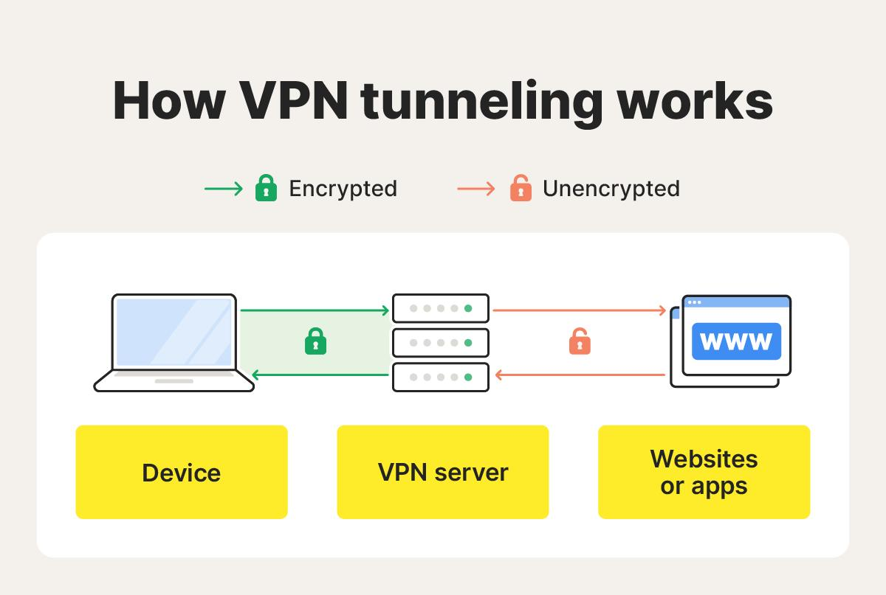
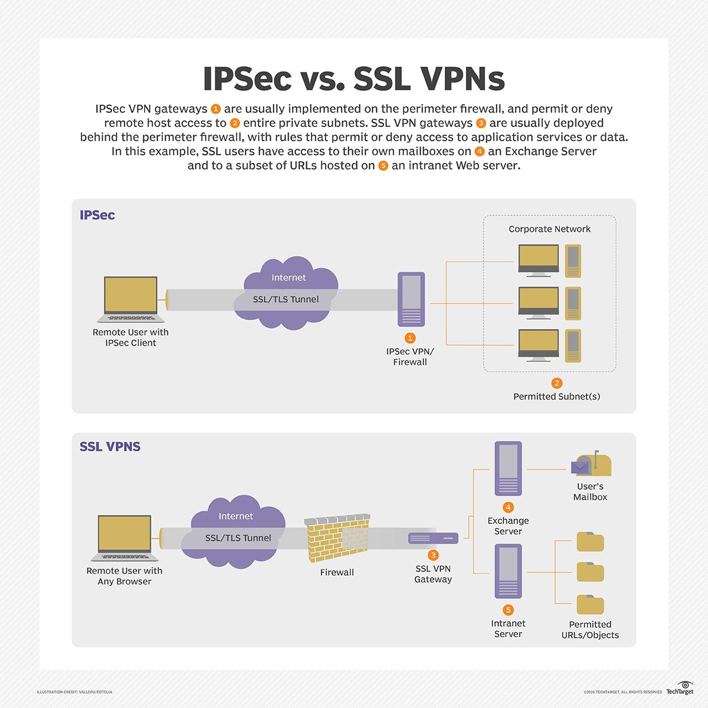
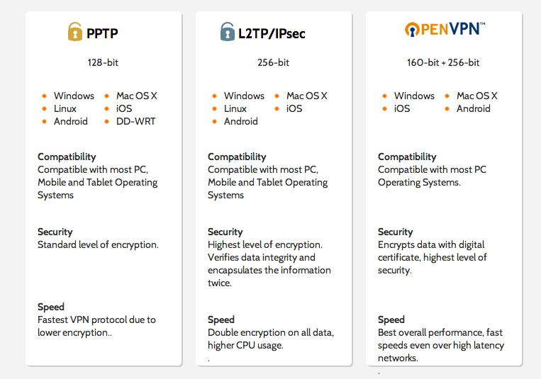

|
Mạng riêng ảo (VPN - Virtual Private Network) là một giải pháp công nghệ tạo ra kết nối bảo mật trên nền tảng mạng công cộng (Internet).
Để một hệ thống VPN vận hành ổn định và an toàn, kiến trúc của nó phải bao gồm 4 thành phần nền tảng sau:

Hình ảnh minh họa các thành phần của VPN
2.1. VPN Client
VPN Client đóng vai trò là thực thể khởi tạo kết nối (Initiator). Trong lý thuyết dịch vụ mạng, Client không chỉ đơn thuần là một ứng dụng người dùng, mà là một Endpoint chiến lược thực hiện toàn bộ các tiến trình xử lý và bảo mật dữ liệu ngay tại nguồn trước khi truyền tải.
- 2.1.1. Thiết lập Virtual Network Interface
- Khi người dùng kích hoạt VPN, Client sẽ yêu cầu hệ điều hành khởi tạo một giao diện mạng ảo (Virtual Card). Giao diện này hoạt động song song với card mạng vật lý nhưng được ưu tiên cao hơn trong bảng định tuyến (Routing Table).
Mọi gói tin đi từ các ứng dụng như trình duyệt web hay phần mềm quản lý doanh nghiệp sẽ được "đánh chặn" và điều hướng qua card ảo này để xử lý bảo mật thay vì đi thẳng ra mạng Internet không an toàn.
- 2.1.2. Cơ chế mã hóa tại nguồn
- Đây là bước tối quan trọng để bảo vệ quyền riêng tư. Trước khi gói tin rời khỏi thiết bị, VPN Client sử dụng các tiêu chuẩn mã hóa tiên tiến (như AES-256 bit) để biến đổi toàn bộ nội dung dữ liệu thành các chuỗi ký tự ngẫu nhiên.
Quy trình này đảm bảo rằng dữ liệu luôn ở trạng thái "vô hình" và không thể bị giải mã bởi các bên thứ ba như nhà cung cấp dịch vụ mạng (ISP) hay các tác nhân tấn công tại các điểm Wi-Fi công cộng.
- 2.1.3. Xử lý Logic định tuyến (Split Tunneling)
- Một VPN Client hiện đại có khả năng phân loại lưu lượng thông minh. Nó quyết định lưu lượng nào mang tính nhạy cảm như dữ liệu thanh toán, thông tin khách hàng cần phải đi qua đường hầm VPN để bảo mật, và lưu lượng nào mang tính giải trí thông thường có thể đi thẳng ra Internet để tối ưu hóa băng thông và giảm độ trễ cho hệ thống.

Hình ảnh minh họa VPN Client
2.2. VPN Sever
VPN Server vừa đóng vai trò là điểm hội tụ (Concentrator) các kết nối VPN vừa là "người gác cổng" cho tài nguyên mạng nội bộ.
- 2.2.1. Xác thực AAA (Authentication, Authorization, Accounting)
- Trong hệ thống VPN, người dùng không thể truy cập tự do mà phải trải qua quá trình kiểm tra nghiêm ngặt. Đầu tiên, hệ thống xác thực danh tính thông qua tài khoản/mật khẩu,
mã OTP hoặc chứng chỉ số để đảm bảo đúng người. Sau đó, hệ thống phân quyền, tức là mỗi người chỉ được truy cập vào những tài nguyên phù hợp với vai trò của mình (ví dụ: kế toán chỉ vào phần mềm tài chính, không xem được dữ liệu nhân sự).
Cuối cùng, toàn bộ hoạt động đăng nhập và truy cập đều được ghi lại để phục vụ quản lý và kiểm tra. Ví dụ, một nhân viên làm việc từ xa phải đăng nhập VPN bằng tài khoản công ty, nếu thông tin không hợp lệ thì sẽ bị từ chối ngay.
- 2.2.2. Giải mã và Termination
- Khi dữ liệu được truyền qua VPN, chúng luôn được mã hóa để đảm bảo an toàn trên môi trường Internet công cộng.
Khi đến VPN server, hệ thống sẽ thực hiện quá trình giải mã để khôi phục dữ liệu về dạng ban đầu và xử lý yêu cầu của người dùng. Quá trình này được gọi là “termination”, tức là điểm kết thúc của “đường hầm” VPN.
Ví dụ, khi gửi yêu cầu mở một file báo cáo từ máy ở nhà, dữ liệu đó sẽ được mã hóa trong suốt quá trình truyền đi và chỉ được giải mã khi đến server công ty, giúp đảm bảo không ai bên ngoài có thể đọc được nội dung.
- 2.2.3. Cấp phát tài nguyên nội bộ
- Sau khi xác thực thành công, VPN server sẽ cấp cho người dùng một địa chỉ IP nội bộ và cho phép truy cập vào các tài nguyên trong mạng công ty như đang làm việc trực tiếp tại văn phòng.
Nhờ đó, người dùng có thể sử dụng các hệ thống như server cơ sở dữ liệu, phần mềm quản lý kho hoặc các file nội bộ mà không cần có mặt tại công ty.
Ví dụ, một nhân viên làm việc tại nhà vẫn có thể truy cập hệ thống quản lý đơn hàng hoặc dữ liệu khách hàng như khi đang ngồi trong mạng nội bộ của doanh nghiệp.

Hình ảnh minh họa VPN Server
2.3. VPN Tunnel
“Đường hầm” là khái niệm trừu tượng mô tả quá trình truyền tải dữ liệu an toàn qua môi trường mạng không tin cậy.
- 2.3.1. Kỹ thuật Đóng gói (Encapsulation)
- Là phương thức cốt lõi giúp các gói tin mang địa chỉ IP nội bộ (Private IP) có thể di chuyển an toàn trên hạ tầng Internet công cộng. Về bản chất, toàn bộ gói tin gốc bao gồm cả dữ liệu và tiêu đề IP nội bộ
(Inner IP Header) sẽ được bao bọc bên trong một lớp tiêu đề mới gọi là tiêu đề ngoài (Outer IP Header) mang địa chỉ IP công cộng của VPN Client và VPN Server.
- Lớp vỏ bọc này đóng vai trò như một "giấy thông hành" hợp lệ giúp gói tin đi xuyên qua các Router trung gian mà không làm lộ diện cấu trúc mạng nội bộ hay định danh thực sự của người dùng. Để tối ưu bảo mật,
dữ liệu bên trong thường được mã hóa hoàn toàn trước khi đóng gói, khiến gói tin trở thành một khối ký tự vô nghĩa nếu bị đánh chặn trên đường truyền. Quy trình này kết thúc khi gói tin đến VPN Server, nơi thực hiện
thao tác gỡ bỏ tiêu đề ngoài (Decapsulation) để khôi phục lại dữ liệu gốc và định tuyến chính xác đến đích.
- 2.3.2. Cơ chế bảo mật
- Khi dữ liệu đi qua “đường hầm” VPN, nó sẽ được bảo vệ bởi nhiều lớp an ninh nhằm tránh bị đọc lén, sửa đổi hoặc giả mạo.
Ba yếu tố cốt lõi đảm bảo an toàn cho dữ liệu gồm tính bí mật, tính toàn vẹn và xác thực nguồn gốc. Nhờ đó, dù truyền qua Internet công cộng, dữ liệu vẫn được bảo vệ như đang ở trong mạng nội bộ riêng.
-
Tính bí mật (Confidentiality): Đảm bảo chỉ người gửi và người nhận hợp lệ mới đọc được nội dung dữ liệu. VPN thực hiện điều này bằng cách mã hóa dữ liệu trước khi gửi đi.
Khi dữ liệu đã mã hóa, nếu bị chặn giữa đường thì kẻ tấn công cũng chỉ thấy được những ký tự vô nghĩa, không thể hiểu nội dung.
Ví dụ, khi nhân viên đăng nhập vào hệ thống công ty từ quán cà phê có WiFi công cộng, thông tin tài khoản của nhân viên vẫn được bảo vệ vì đã được mã hóa.
-
Tính toàn vẹn (Integrity): Tính toàn vẹn đảm bảo dữ liệu khi gửi đi và khi nhận về phải giống hệt nhau, không bị thay đổi dù chỉ một ký tự. Trong VPN, điều này được thực hiện bằng cách tạo ra một dấu kiểm tra
đi kèm dữ liệu. Khi dữ liệu đến nơi, hệ thống sẽ tính lại và so sánh với dấu ban đầu. Nếu có bất kỳ sai lệch nào, hệ thống sẽ phát hiện và từ chối dữ liệu đó.
Ví dụ, nếu người dùng gửi file báo cáo và bị hacker chèn sửa số liệu trên đường truyền, hệ thống sẽ nhận ra file đã bị thay đổi và không chấp nhận file đó.
-
Xác thực nguồn gốc (Origin Authentication): Xác thực nguồn gốc đảm bảo dữ liệu đến đúng từ người gửi hợp lệ, không phải kẻ giả mạo.
VPN thực hiện điều này bằng các cơ chế như khóa bí mật dùng chung, chữ ký số hoặc chứng chỉ số. Nhờ đó, bên nhận có thể kiểm tra xem dữ liệu có thực sự do server hoặc client hợp lệ gửi hay không.
Ví dụ, khi nhân viên nhận dữ liệu từ server công ty, hệ thống sẽ kiểm tra “chữ ký” của server; nếu không đúng, dữ liệu sẽ bị coi là giả mạo và bị chặn lại.

Hình ảnh minh họa VPN Tunnel
2.4. Các giao thức VPN thường dùng
Giao thức là bộ quy tắc chuẩn hóa cách thức mã hóa và truyền tải trong “đường hầm”. Các giao thức theo tầng (Layer) trong mô hình OSI:
- 2.4.1 IPsec (Internet Protocol Security)
- IPsec là giao thức VPN hoạt động ở tầng mạng (Layer 3), được đánh giá là mạnh mẽ và an toàn nhất hiện nay.
Nó có khả năng mã hóa toàn bộ gói tin IP và tạo ra một “đường hầm” bảo mật giữa hai điểm kết nối. IPsec thường được sử dụng trong mô hình Site-to-Site,
nghĩa là kết nối hai mạng nội bộ của hai chi nhánh công ty với nhau qua Internet nhưng vẫn đảm bảo an toàn như mạng riêng.
Giao thức này bao gồm hai thành phần chính là AH (Authentication Header) dùng để đảm bảo tính toàn vẹn và xác thực dữ liệu, và ESP (Encapsulating Security Payload) dùng để mã hóa và bảo vệ nội dung dữ liệu.
Nhờ đó, dữ liệu được bảo vệ toàn diện cả về nội dung lẫn nguồn gốc.
- 2.4.2 SSL/TLS (Secure Sockets Layer / Transport Layer Security)
- SSL/TLS VPN hoạt động ở tầng ứng dụng (Layer 7) và nổi bật với tính linh hoạt cao.
Điểm mạnh của giao thức này là cho phép người dùng truy cập tài nguyên nội bộ thông qua trình duyệt web mà không cần cài đặt phần mềm VPN riêng biệt.
Nó rất tiện lợi cho nhân viên làm việc từ xa hoặc sử dụng thiết bị cá nhân. SSL/TLS thường được sử dụng trong các hệ thống truy cập web bảo mật (HTTPS),
vì vậy người dùng chỉ cần truy cập một địa chỉ web, đăng nhập và sử dụng tài nguyên như bình thường. Tuy nhiên, trong một số trường hợp phức tạp, mức độ kiểm soát và bảo mật của nó có thể không mạnh bằng IPsec.
- 2.4.3 L2TP (Layer 2 Tunneling Protocol)
- L2TP là giao thức hoạt động ở tầng liên kết dữ liệu (Layer 2), có chức năng chính là tạo “đường hầm” để truyền dữ liệu giữa hai điểm.
Tuy nhiên, bản thân L2TP không có cơ chế mã hóa mạnh, vì vậy nó thường được kết hợp với IPsec để tạo thành L2TP/IPsec nhằm đảm bảo cả khả năng tạo “đường hầm” và bảo mật dữ liệu. Giao thức này được hỗ trợ sẵn trên nhiều hệ điều hành như Windows,
nên khá phổ biến trong các kết nối VPN cá nhân hoặc doanh nghiệp nhỏ. Khi sử dụng L2TP/IPsec, L2TP chịu trách nhiệm tạo tunnel, còn IPsec đảm nhiệm việc mã hóa và bảo vệ dữ liệu.
- 2.4.4 PPTP (Point-to-Point Tunneling Protocol)
- PPTP là một trong những giao thức VPN lâu đời, hoạt động ở tầng liên kết dữ liệu (Layer 2).
Ưu điểm của PPTP là tốc độ cao và dễ cấu hình, tuy nhiên nhược điểm là bảo mật rất yếu. Các phương thức mã hóa của PPTP đã lỗi thời và dễ bị tấn công, đặc biệt là các hình thức brute-force để dò mật khẩu.
Vì vậy, hiện nay PPTP gần như không còn được khuyến nghị sử dụng trong các hệ thống yêu cầu bảo mật cao. Nó chỉ còn mang tính chất tham khảo hoặc dùng trong các môi trường không quan trọng về bảo mật.


Hình ảnh minh họa các giao thức VPN thường dùng
|